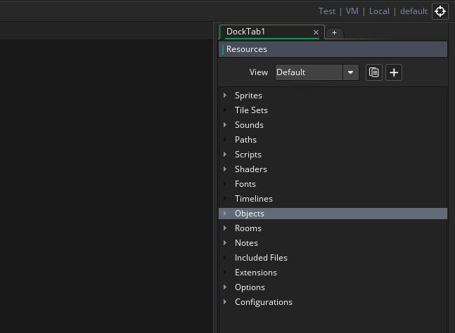

After logging in and starting a new project, GameMaker Studio
2 will take you to the initial workspace with some basic
windows docked to the IDE. In general, the workspace is simply an
area where you can organise the different resources of your game
while you are working: 
As you can see, the initial
workspace is on a tab at the top of the screen (and you can rename
it by double clicking the tab), but you can create further
workspaces for the project by clicking the  to the side, giving you multiple possible
workspaces for any single project. For example, maybe you are
working on interactions between the player and several enemy
objects, so you'd have the player on it's own workspace and the
enemy objects in another, and perhaps another workspace only to
show the scripts that both use.
to the side, giving you multiple possible
workspaces for any single project. For example, maybe you are
working on interactions between the player and several enemy
objects, so you'd have the player on it's own workspace and the
enemy objects in another, and perhaps another workspace only to
show the scripts that both use.
Another important feature of workspaces is that you can click
 on the tab and - still holding the mouse button
on the tab and - still holding the mouse button  down -
drag it off of the main IDE window into its own individual window,
making it very easy to organise things if you are using - for
example - multiple displays. You also merge these secondary
workspace windows back into the main one by dragging the tab back
onto the first window. Note that although you appear to have two
instances of the IDE running when you do this, they are both for
the same project and you cannot have one project in one and another
ion the other unless you specifically open two instances of
GameMaker Studio 2.
down -
drag it off of the main IDE window into its own individual window,
making it very easy to organise things if you are using - for
example - multiple displays. You also merge these secondary
workspace windows back into the main one by dragging the tab back
onto the first window. Note that although you appear to have two
instances of the IDE running when you do this, they are both for
the same project and you cannot have one project in one and another
ion the other unless you specifically open two instances of
GameMaker Studio 2.
When you first start GameMaker Studio 2, your workspace will already be populated by a couple of windows which will be "docked" to the IDE. These are explained briefly below:
You can also see in the image above the Output Window. There are a number of sub tabs in this window related to Source Control, Searching and debugging, with the initial tab being for the console/compiler output, which shows you what is happening when you are compiling a game for testing or when creating a final package for distribution. This will also show any debug messages that you choose to send from your project at runtime, and can be configured to show different quantities of information from the General Preferences.
If you close the output window and wish to recover it you can use the Windows Menu.
On the right of the screen you can find the resource tree. Here is where you can create and edit the resources that your game uses, as well as generate and change configurations. Resources are created by right-clickingon the resource folder and selecting Create, or from the context menu at the top of the IDE which says Resources:
Selecting any one of these options will create a new, empty resource of the given type for you. Note that while the resource tree is docked to the IDE by default, you can take it out and into its own window by clicking
on the "Resources" text at the top and dragging. You can re-dock it again at any time by dragging it to the sides or bottom of the IDE. If you close the resources window and wish to recover it you can use the Windows Menu.
For more section on the available resources please see the section on Editors.
Navigating The Workspace
While within any workspace you can call up the Right Button
Menu at any time by right-clicking  anywhere,
which will open the following menu:
anywhere,
which will open the following menu: 
Clicking Resources will open up a list of all the
resources in the Resource Tree that
you can create, and selecting any one of them will create that
resource for you, and focus the workspace on the editor window for
that resource. If you click the Windows option, you will be
shown a list of all the currently open windows within the workspace
and you can select any of them to have the workspace focus on that
window. Finally you have the Go to option which will open
the following window: 
This window permits you to see a list of every resource in your
game and you can type in text at the top of the window to filter
the results shown. For example, if you have 4 sprites all with the
word "logo" somewhere in their name, like spr_Logo_One,
then typing "logo" will show only those four sprites. Clicking on
any of the resources shown on the list will open it in the current
workspace or focus the workspace on it if it is already open. Note
that you can also use the keyboard shortcut  /
/
 + T to open the Goto window.
+ T to open the Goto window.
Another method for navigating the workspace is to use
Bookmarks. You can add up to 9 "bookmarks" to IDE windows or
sections of code in scripts or object events, and then you can
quickly skip between them using the correct key combination. To add
a bookmark, simply select the window or line of code that you wish
to tag and then  /
/  +
+  +
NumberKey[1 - 9], and this will set the bookmark,
labelling the item in the IDE as follows:
+
NumberKey[1 - 9], and this will set the bookmark,
labelling the item in the IDE as follows: 
In the image above we have assigned bookmarks numbered 1, 2, and
4 to different parts of the IDE, and we can now navigate away from
these windows or even close them altogether, as the bookmark will
permit us to go straight back to it again at any time later. This
is done by pressing  /
/  + NumberKey[1 - 9], and
if the bookmarked item has been closed it will be opened, otherwise
the workspace will pan to the selected bookmark.
+ NumberKey[1 - 9], and
if the bookmarked item has been closed it will be opened, otherwise
the workspace will pan to the selected bookmark.
If you want to remove a bookmark, you simply need to select the
bookmarked window or code line and then repeat the  +
+
 + NumberKey[0 - 9] that you
used to create it.
+ NumberKey[0 - 9] that you
used to create it.
Other ways to navigate the workspace include using the keyboard
shortcut  /
/ +
+  +
<Arrow Keys> to move between any open windows in the
direction pressed, and by pressing and holding the middle mouse
button
+
<Arrow Keys> to move between any open windows in the
direction pressed, and by pressing and holding the middle mouse
button  then dragging the mouse you can pan
around the workspace too.
then dragging the mouse you can pan
around the workspace too.
Docking
We mentioned briefly above that you can dock many windows
into the current workspace window and you can un-dock those
that are already docked. If you click  on, for
example, the Resource Tree tab at the top and drag it to the left
of the current workspace, you will see that it becomes a free
floating window.
on, for
example, the Resource Tree tab at the top and drag it to the left
of the current workspace, you will see that it becomes a free
floating window.

This converse is true and if you drag certain windows to the sides of the workspace (or the bottom) then they will be docked, meaning that it essentially becomes part of the IDE window overlay and is no longer independent. When doing this, you drag the window to the area you want to dock to and it will be highlighted to show that you can dock the window there:

In this way you can create a personalised IDE experience that
fits your workflow and way of doing things. It's worth noting that
all docked windows can be hidden/unhidden individually by clicking
the button to the side of the docked items (highlighted in the
image at the top of this page), or you can hide/unhide all docked
items using the quickbutton  at the top of the IDE, and note too
that the IDE will remember docked windows between sessions.
at the top of the IDE, and note too
that the IDE will remember docked windows between sessions.
Quick Buttons
Below we list the quick buttons that are available by default with GameMaker Studio 2. These buttons can be found at the top of the IDE and represent many of the most common commands that you'll be using while working in GameMaker Studio 2 to make your workflow smoother (note most of these buttons have an equivalent menu option too):
| Opens the Start Page in a new workspace | |
| Create a new project. | |
| Open a previously created project. | |
| Save the current project. Note that by default GameMaker Studio 2 will save your project automatically (depending on the Preferences that you have set) and this button is simply so you can force a save at any time. | |
| Clicking this will test-run your current project along with the debug module. Use this to test and debug your game. You can find more about the debug module from the section on the Debugger. | |
| Clicking this will test-run your project on the chosen target platform. | |
| This button can be used to cancel the compilation of your games to the target module, or (on certain targets only) to stop the game while it is running after it has been compiled. | |
| Pressing this button will clear the current asset
compiler cache. GameMaker Studio 2 stores images, sounds,
scripts etc... between use in a cache so as to save time when
testing your game as it will only re-compile those things that have
been changed before testing. However, this cache may become
corrupted or "stale" over time, or you may wish to do a full test
with no caching being done previously, in which case you can clear
the cache by pressing this button. IMPORTANT: It is recommended that you
always clear the cache before creating the executable for any
target platform. |
|
| Clicking this will open up the Main Game Options Editor. Note that this is only the main, general, options for the current project, but you may also have platform specific options being listed as a part of the Resource Tree. | |
| Click this to open the manual (or alternatively,
press |
|
| This will zoom the focused workspace out to make
everything smaller (you can also achieve this holding down
|
|
| This will reset the focused workspace to be 1:1 again. | |
| This will zoom the focused workspace in to make
everything larger (you can also achieve this holding down
|
|
| This will toggle all the docked elements between hidden and unhidden. | |
| This will toggle laptop mode on and off (This will only appear if you are currently using a laptop - see the section on IDE Input for more details) |